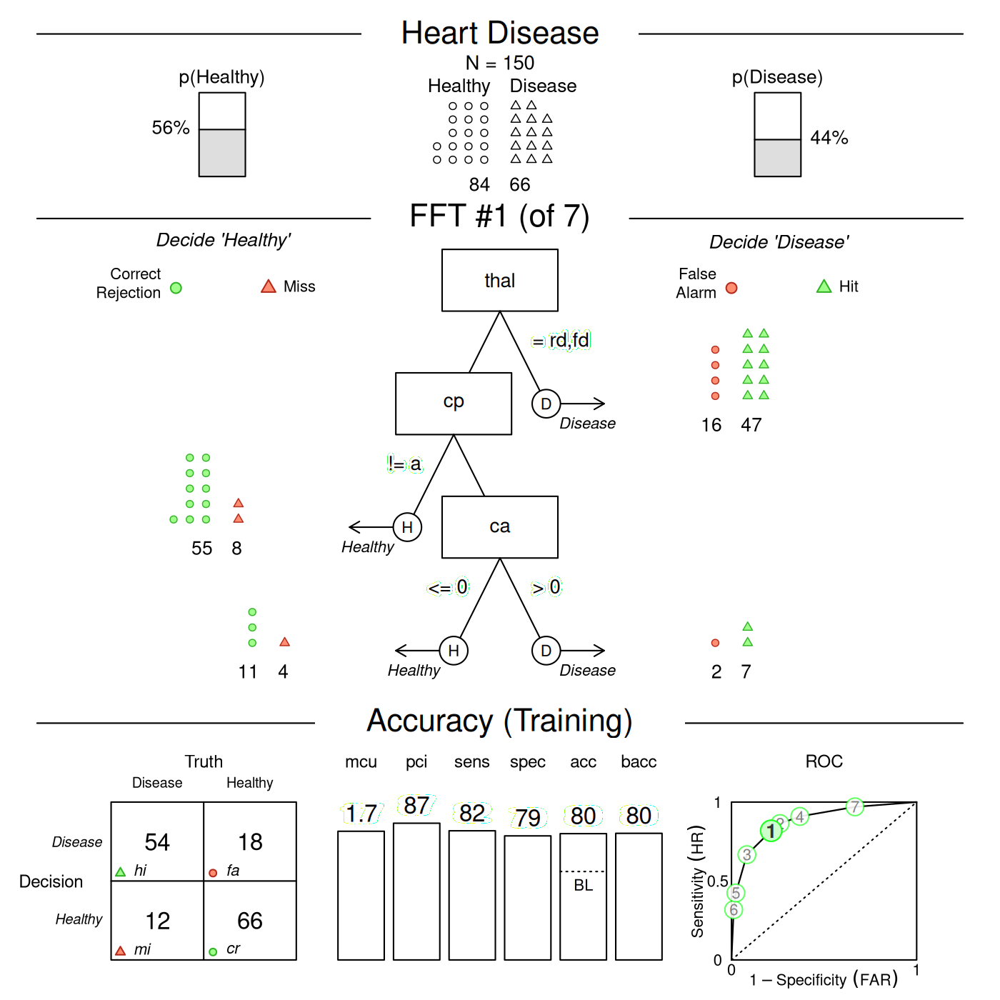

Creating FFTs with FFTrees()
Nathaniel Phillips and Hansjörg Neth
2025-09-02
Source:vignettes/FFTrees_function.Rmd
FFTrees_function.RmdDetails on the FFTrees() function
This vignette starts by building a fast-and-frugal tree (FFT) from
the heartdisease data — also used in the Tutorial: FFTs for heart disease and Phillips et al. (2017) — but then explores
additional aspects of the FFTrees() function.
The goal of the FFTrees() function is to create FFTs
from data and record all details of the problem specification, tree
definitions, the classification process, and performance measures in an
FFTrees object. As FFTrees() can handle two
sets of data (for training vs. testing) and creates a range of FFTs,
each with distinct process and performance characteristics, evaluating
the function may take some time (typically a few seconds) and the
structure of the resulting FFTrees object is quite complex.
But as FFTrees() is at the heart of the
FFTrees package, it pays to understand its arguments
and the structure of an FFTrees object.
Example: Predicting heart disease
An FFT generally addresses binary classification problems: It attempts to classify the outcomes of a criterion variable into one of two classes (i.e., True or False) based on a range of potential predictor variables (aka. cues or features). A corresponding problem from the domain of clinical diagnostics is:
- Which patient has heart disease, given some data on patients’ general health and diagnostic symptoms?

To address this problem, the FFTrees package
includes the heartdisease data. But rather than using the
full dataset to fit our FFTs, we have split the data into a training set
(heart.train), and test set (heart.test). Here
is a peak at the corresponding data frames:
# Training data:
head(heart.train)#> # A tibble: 6 × 14
#> diagnosis age sex cp trestbps chol fbs restecg thalach exang oldpeak
#> <lgl> <dbl> <dbl> <chr> <dbl> <dbl> <dbl> <chr> <dbl> <dbl> <dbl>
#> 1 FALSE 44 0 np 108 141 0 normal 175 0 0.6
#> 2 FALSE 51 0 np 140 308 0 hypert… 142 0 1.5
#> 3 FALSE 52 1 np 138 223 0 normal 169 0 0
#> 4 TRUE 48 1 aa 110 229 0 normal 168 0 1
#> 5 FALSE 59 1 aa 140 221 0 normal 164 1 0
#> 6 FALSE 58 1 np 105 240 0 hypert… 154 1 0.6
#> # ℹ 3 more variables: slope <chr>, ca <dbl>, thal <chr>
# Testing data:
head(heart.test)#> # A tibble: 6 × 14
#> diagnosis age sex cp trestbps chol fbs restecg thalach exang oldpeak
#> <lgl> <dbl> <dbl> <chr> <dbl> <dbl> <dbl> <chr> <dbl> <dbl> <dbl>
#> 1 FALSE 51 0 np 120 295 0 hypert… 157 0 0.6
#> 2 TRUE 45 1 ta 110 264 0 normal 132 0 1.2
#> 3 TRUE 53 1 a 123 282 0 normal 95 1 2
#> 4 TRUE 45 1 a 142 309 0 hypert… 147 1 0
#> 5 FALSE 66 1 a 120 302 0 hypert… 151 0 0.4
#> 6 TRUE 48 1 a 130 256 1 hypert… 150 1 0
#> # ℹ 3 more variables: slope <chr>, ca <dbl>, thal <chr>The critical dependent variable (or binary criterion variable) is
diagnosis. This variable indicates whether a patient has
heart disease (diagnosis = TRUE) or not
(diagnosis = FALSE). All other variables in the dataset
(e.g., sex, age, and several biological
measurements) can be used as predictors (aka. cues).
Creating trees with FFTrees()
To illustrate the difference between fitting and prediction, we will
train the FFTs on heart.train, and test
their prediction performance in heart.test. Note that we
can also automate the training / test split using the
train.p argument in FFTrees(). Setting
train.p will randomly split train.p% of the
original data into a training set.
To create a set of FFTs, we use the FFTrees() function
to create a new FFTrees object called
heart.fft. Here, we specify diagnosis as the
binary criterion (or dependent variable), and include all other
(independent) variables with formula = diagnosis ~ .:
# Create an FFTrees object called heart.fft predicting diagnosis:
heart.fft <- FFTrees(formula = diagnosis ~.,
data = heart.train,
data.test = heart.test)If we wanted to only consider specific variables,
like sex and age, for our trees, we could
specify formula = diagnosis ~ age + sex.
Elements of an FFTrees object
The FFTrees() function returns an object of the
FFTrees class. There are many elements in an
FFTrees object. We can obtain these elements by printing
their names:
# See the elements of an FFTrees object:
names(heart.fft)#> [1] "criterion_name" "cue_names" "formula" "trees"
#> [5] "data" "params" "competition" "cues"Inspecting these elements provides a wealth of information on the
range of FFTs contained in the current FFTrees object:
criterion_name: The name of the (predicted) binary criterion variable.cue_names: The names of all potential cue variables (predictors) in the data.formula: The formula used to create theFFTreesobject.trees: Information on all trees contained in the object, with list elements that specify their numbern, thebesttree, as well as treedefinitions, verbal descriptions (inwords),decisions, and the performance characteristics (statsandlevel_stats) of each FFT.data: The datasets used totrainandtestthe FFTs (if applicable).params: The parameters used for constructing FFTs (currently 19 parameters).competition: Models and statistics of alternative classification algorithms (fortest,train, andmodels).cues: Information on all cue variables (predictors), with list elements that specify theirthresholdsand performancestatswhen training FFTs.
Basic performance characteristics of FFTs
We can view basic information about the FFTrees object
by printing its name. As the default tree construction
algorithm ifan creates multiple trees with different exit
structures, an FFTrees object typically contains many
FFTs.
When printing an FFTrees object, we automatically see
the performance on the training data (i.e., for
fitting, rather than prediction) and obtain the
information about the tree with the highest value of the
goal statistic. By default, the goal is set to
weighed accuracy wacc:
# Training performance of the best tree (on "train" data, given current goal):
heart.fft # same as: print(heart.fft, data = "train")#> FFTrees
#> - Trees: 7 fast-and-frugal trees predicting diagnosis
#> - Cost of outcomes: hi = 0, fa = 1, mi = 1, cr = 0
#> - Cost of cues:
#> age sex cp trestbps chol fbs restecg thalach
#> 1 1 1 1 1 1 1 1
#> exang oldpeak slope ca thal
#> 1 1 1 1 1
#>
#> FFT #1: Definition
#> [1] If thal = {rd,fd}, decide True.
#> [2] If cp != {a}, decide False.
#> [3] If ca > 0, decide True, otherwise, decide False.
#>
#> FFT #1: Training Accuracy
#> Training data: N = 150, Pos (+) = 66 (44%)
#>
#> | | True + | True - | Totals:
#> |----------|--------|--------|
#> | Decide + | hi 54 | fa 18 | 72
#> | Decide - | mi 12 | cr 66 | 78
#> |----------|--------|--------|
#> Totals: 66 84 N = 150
#>
#> acc = 80.0% ppv = 75.0% npv = 84.6%
#> bacc = 80.2% sens = 81.8% spec = 78.6%
#>
#> FFT #1: Training Speed, Frugality, and Cost
#> mcu = 1.74, pci = 0.87
#> cost_dec = 0.200, cost_cue = 1.740, cost = 1.940Before interpreting any model output, we need to carefully
distinguish between an FFT’s “Training” (for fitting training data) and
“Prediction” performance (for new test data). Unless we explicitly ask
for print(heart.fft, data = "test"), the output of printing
heart.fft will report on the fitting phase (i.e.,
data = "train" by default). To see the corresponding
prediction performance, we could alternatively ask for:
# Prediction performance of the best training tree (on "test" data):
print(heart.fft, data = "test")When evaluating an FFT for either training or test data, we obtain a wide range of measures.
After some general information on the FFTrees object, we
see a verbal Definition of the best FFT (FFT #1). Key
information for evaluating an FFT’s performance is contained in the
Accuracy panel (for either training or prediction).
Here is a description of the frequency counts and corresponding
statistics provided:
| Statistic | Long name | Definition |
|---|---|---|
| Frequencies: | ||
hi |
Number of hits | |
mi |
Number of misses | |
fa |
Number of false-alarms | |
cr |
Number of correct rejections | |
N |
Number of cases | The total number of cases considered. |
| Probabilities: | ||
acc |
Accuracy | The percentage of cases that were correctly classified. |
ppv |
Positive predictive value | The percentage (or conditional probability) of positive decisions being correct (i.e., True + cases). |
npv |
Negative predictive value | The percentage (or conditional probability) of negative decisions being correct (i.e., True - cases). |
wacc |
Weighted accuracy | The weighted average of sensitivity and specificity,
where sensitivity is weighted by sens.w (by default,
sens.w = .50). |
sens |
Sensitivity | The percentage (or conditional probability) of true positive cases being correctly classified. |
spec |
Specificity | The percentage (or conditional probability) of true negative cases being correctly classified. |
| Frugality: | ||
mcu |
Mean cues used | On average, how many cues were needed to classify cases? In other words, what percent of the available information was used on average? |
pci |
Percent cues ignored | The percent of data that was ignored when
classifying cases with a given tree. This is identical to
mcu / cues.n, where cues.n is the total number
of cues in the data. |
Table 1: Description of FFTs’ basic frequencies and corresponding accuracy and speed/frugality statistics.
To obtain the same information for another FFT of
an FFTrees object, we can call print() with a
numeric tree parameter. For instance, the following
expression would provide the basic performance characteristics of
Tree 3:
# Performance of alternative FFTs (Tree 3) in an FFTrees object:
print(heart.fft, tree = 3, data = "test")Alternatively, we could visualize the same tree and its performance
characteristics by calling
plot(heart.fft, tree = 3, data = "test").
See the Accuracy statistics vignette for details on the accuracy statistics used throughout the FFTrees package.
Cue performance information
Each FFT has a decision threshold for each cue (regardless of whether
or not it is actually used in the tree) that maximizes the
goal value of that cue when it is applied to the entire
training dataset. We can obtain cue accuracy statistics using the
calculated decision thresholds from the cue.accuracies
list. If the object has test data, we can see the marginal cue
accuracies in the test data (using the thresholds calculated from the
training data):
# Decision thresholds and marginal classification training accuracies for each cue:
heart.fft$cues$stats$train#> cue class threshold direction n hi fa mi cr sens
#> 1 age numeric 57 > 150 38 22 28 62 0.5757576
#> 2 sex numeric 0 > 150 53 48 13 36 0.8030303
#> 3 cp character a = 150 48 18 18 66 0.7272727
#> 4 trestbps numeric 148 > 150 15 9 51 75 0.2272727
#> 5 chol numeric 273 > 150 22 17 44 67 0.3333333
#> 6 fbs numeric 0 > 150 10 9 56 75 0.1515152
#> 7 restecg character hypertrophy,abnormal = 150 40 34 26 50 0.6060606
#> 8 thalach numeric 154 <= 150 44 29 22 55 0.6666667
#> 9 exang numeric 0 > 150 31 14 35 70 0.4696970
#> 10 oldpeak numeric 0.8 > 150 41 22 25 62 0.6212121
#> 11 slope character flat,down = 150 45 27 21 57 0.6818182
#> 12 ca numeric 0 > 150 47 19 19 65 0.7121212
#> 13 thal character rd,fd = 150 47 16 19 68 0.7121212
#> spec ppv npv acc bacc wacc dprime
#> 1 0.7380952 0.6333333 0.6888889 0.6666667 0.6569264 0.6569264 0.8227611
#> 2 0.4285714 0.5247525 0.7346939 0.5933333 0.6158009 0.6158009 0.6653742
#> 3 0.7857143 0.7272727 0.7857143 0.7600000 0.7564935 0.7564935 1.3853056
#> 4 0.8928571 0.6250000 0.5952381 0.6000000 0.5600649 0.5600649 0.4882880
#> 5 0.7976190 0.5641026 0.6036036 0.5933333 0.5654762 0.5654762 0.3996338
#> 6 0.8928571 0.5263158 0.5725191 0.5666667 0.5221861 0.5221861 0.2105078
#> 7 0.5952381 0.5405405 0.6578947 0.6000000 0.6006494 0.6006494 0.5065806
#> 8 0.6547619 0.6027397 0.7142857 0.6600000 0.6607143 0.6607143 0.8230087
#> 9 0.8333333 0.6888889 0.6666667 0.6733333 0.6515152 0.6515152 0.8840984
#> 10 0.7380952 0.6507937 0.7126437 0.6866667 0.6796537 0.6796537 0.9394337
#> 11 0.6785714 0.6250000 0.7307692 0.6800000 0.6801948 0.6801948 0.9297212
#> 12 0.7738095 0.7121212 0.7738095 0.7466667 0.7429654 0.7429654 1.3009993
#> 13 0.8095238 0.7460317 0.7816092 0.7666667 0.7608225 0.7608225 1.4243467
#> cost_dec cost cost_cue
#> 1 -0.3333333 -1.333333 1
#> 2 -0.4066667 -1.406667 1
#> 3 -0.2400000 -1.240000 1
#> 4 -0.4000000 -1.400000 1
#> 5 -0.4066667 -1.406667 1
#> 6 -0.4333333 -1.433333 1
#> 7 -0.4000000 -1.400000 1
#> 8 -0.3400000 -1.340000 1
#> 9 -0.3266667 -1.326667 1
#> 10 -0.3133333 -1.313333 1
#> 11 -0.3200000 -1.320000 1
#> 12 -0.2533333 -1.253333 1
#> 13 -0.2333333 -1.233333 1We can also visualize the cue accuracies for the training data (in
ROC space, i.e., showing each cue’s hit rate by its false alarm rate) by
calling plot() with the what = "cues"
argument. This will show the sensitivities and specificities for each
cue, with the top five cues highlighted and listed:
# Visualize individual cue accuracies:
plot(heart.fft, what = "cues",
main = "Cue accuracy for heartdisease")#> Plotting cue training statistics:
#> — Cue accuracies ranked by bacc
#> 
See the Plotting FFTrees objects vignette for more details on visualizing cue accuracies and FFTs.
Tree definitions
The tree.definitions data frame contains definitions
(cues, classes, exits, thresholds, and directions) of all trees in
an FFTrees object. The combination of these five pieces of
information (as well as their order), define and describe how a
tree makes decisions:
# See the definitions of all trees:
heart.fft$trees$definitions#> # A tibble: 7 × 7
#> tree nodes classes cues directions thresholds exits
#> <int> <int> <chr> <chr> <chr> <chr> <chr>
#> 1 1 3 c;c;n thal;cp;ca =;=;> rd,fd;a;0 1;0;0.5
#> 2 2 4 c;c;n;c thal;cp;ca;slope =;=;>;= rd,fd;a;0;flat,down 1;0;1;0.5
#> 3 3 3 c;c;n thal;cp;ca =;=;> rd,fd;a;0 0;1;0.5
#> 4 4 4 c;c;n;c thal;cp;ca;slope =;=;>;= rd,fd;a;0;flat,down 1;1;0;0.5
#> 5 5 3 c;c;n thal;cp;ca =;=;> rd,fd;a;0 0;0;0.5
#> 6 6 4 c;c;n;c thal;cp;ca;slope =;=;>;= rd,fd;a;0;flat,down 0;0;0;0.5
#> 7 7 4 c;c;n;c thal;cp;ca;slope =;=;>;= rd,fd;a;0;flat,down 1;1;1;0.5Separate levels in tree definitions are separated by
colons (;). To understand how to read these definitions,
let’s start by understanding Tree 1, the tree with the highest weighted
accuracy during training:
-
Nodes, classes, and cues:
Tree 1 has three cues in the order
thal,cp,ca.The classes of the cues are
c(character),candn(numeric).
-
Exits, directions, and thresholds:
The decision exits for the cues are 1 (positive), 0 (negative), and 0.5 (both positive and negative). This means that the first cue only makes positive decisions, the second cue only makes negative decisions, and the third cue makes both positive and negative decisions.
The decision thresholds are
rdandfdfor the first cue,afor the second cue, and0for the third cue.The cue directions for predicting the criterion variable are
=for the first cue,=for the second cue, and>for the third cue, respectively. Importantly, these cue directions indicate how the tree would make positive decisions if it had a positive exit (i.e., predicted a Signal) for that cue. If the tree has a positive exit for the given cue, then cases that satisfy this threshold and direction are classified as having a positive criterion value. However, if the tree has a negative exit for a given cue, then cases that do not satisfy the given thresholds are classified as negative. Thus, the directions for cues with negative exits need to be negated (e.g.,=becomes!=,>becomes<=, etc.).
From this information, we can understand and verbalize Tree 1 as follows:
- If
thalis equal to eitherrdorfd, predict a positive criterion value. - Otherwise, if
cpis not equal toa, predict a negative value. - Otherwise, if
cais greater than 0, predict a positive value,
else predict a negative value.
Note that heart.fft$trees$definitions also reveals that
Tree 3 and Tree 5 use the same cues and cue directions as Tree 1.
However, they differ in the exit structures of the first and second cues
(or nodes).
Applying the inwords() function to an
FFTrees object returns a verbal description of a tree. For
instance, to obtain a verbal description of the tree with the highest
training accuracy (i.e., Tree #1), we can ask for:
# Describe the best training tree (i.e., Tree #1):
inwords(heart.fft, tree = 1)#> [1] "If thal = {rd,fd}, decide True."
#> [2] "If cp != {a}, decide False."
#> [3] "If ca > 0, decide True, otherwise, decide False."Accuracy statistics of FFTs
The performance of an FFT on a specific dataset is characterized by a
range of accuracy statistics. Here are the training statistics for all
trees in heart.fft:
# Training statistics for all trees:
heart.fft$trees$stats$train#> # A tibble: 7 × 20
#> tree n hi fa mi cr sens spec far ppv npv dprime
#> <int> <int> <int> <int> <int> <int> <dbl> <dbl> <dbl> <dbl> <dbl> <dbl>
#> 1 1 150 54 18 12 66 0.818 0.786 0.214 0.75 0.846 1.69
#> 2 2 150 57 22 9 62 0.864 0.738 0.262 0.722 0.873 1.72
#> 3 3 150 44 7 22 77 0.667 0.917 0.0833 0.863 0.778 1.79
#> 4 4 150 60 31 6 53 0.909 0.631 0.369 0.659 0.898 1.65
#> 5 5 150 28 2 38 82 0.424 0.976 0.0238 0.933 0.683 1.74
#> 6 6 150 21 1 45 83 0.318 0.988 0.0119 0.955 0.648 1.71
#> 7 7 150 64 56 2 28 0.970 0.333 0.667 0.533 0.933 1.40
#> # ℹ 8 more variables: acc <dbl>, bacc <dbl>, wacc <dbl>, cost_dec <dbl>,
#> # cost_cue <dbl>, cost <dbl>, pci <dbl>, mcu <dbl>The corresponding statistics for the testing are:
# Testing statistics for all trees:
heart.fft$trees$stats$test#> # A tibble: 7 × 20
#> tree n hi fa mi cr sens spec far ppv npv dprime acc
#> <int> <int> <int> <int> <int> <int> <dbl> <dbl> <dbl> <dbl> <dbl> <dbl> <dbl>
#> 1 1 153 64 19 9 61 0.877 0.762 0.238 0.771 0.871 1.86 0.817
#> 2 2 153 67 26 6 54 0.918 0.675 0.325 0.720 0.9 1.82 0.791
#> 3 3 153 49 8 24 72 0.671 0.9 0.1 0.860 0.75 1.71 0.791
#> 4 4 153 69 36 4 44 0.945 0.55 0.45 0.657 0.917 1.70 0.739
#> 5 5 153 28 0 45 80 0.384 1 0 1 0.64 2.44 0.706
#> 6 6 153 22 0 51 80 0.301 1 0 1 0.611 2.22 0.667
#> 7 7 153 72 56 1 24 0.986 0.3 0.7 0.562 0.96 1.60 0.627
#> # ℹ 7 more variables: bacc <dbl>, wacc <dbl>, cost_dec <dbl>, cost_cue <dbl>,
#> # cost <dbl>, pci <dbl>, mcu <dbl>See the Accuracy statistics vignette for the definitions of accuracy statistics used throughout the FFTrees package.
Classification decisions
The decision list contains the raw classification
decisions for each tree and each case, as well as detailed information
on the costs of each classification.
For instance, here are the decisions made by Tree 1 on the training data:
# Inspect the decisions of Tree 1:
heart.fft$trees$decisions$train$tree_1#> # A tibble: 150 × 6
#> criterion decision levelout cost_cue cost_dec cost
#> <lgl> <lgl> <int> <dbl> <dbl> <dbl>
#> 1 FALSE FALSE 2 2 0 2
#> 2 FALSE FALSE 2 2 0 2
#> 3 FALSE FALSE 2 2 0 2
#> 4 TRUE TRUE 1 1 0 1
#> 5 FALSE FALSE 2 2 0 2
#> 6 FALSE TRUE 1 1 1 2
#> 7 FALSE FALSE 2 2 0 2
#> 8 TRUE TRUE 1 1 0 1
#> 9 TRUE TRUE 3 3 0 3
#> 10 FALSE FALSE 2 2 0 2
#> # ℹ 140 more rowsPredicting new cases with predict()
Once we have created an FFTrees object, we can use it to
predict new data using predict().
First, we’ll use the heart.fft object to make
predictions for cases 1 through 10 of the heartdisease
dataset. By default, the tree with the best training wacc
values is used to predict the value of the binary criterion
variable:
# Predict classes for new data from the best training tree:
predict(heart.fft,
newdata = heartdisease[1:10, ])#> [1] TRUE TRUE TRUE FALSE FALSE FALSE TRUE FALSE TRUE TRUEIf we wanted to use an alternative FFT of an FFTrees
object for predicting the criterion outcomes of new data, we could
specify its number in the tree argument of the
predict() function.
To predict class probabilities, we can include the
type = "prob" argument. This will return a matrix of class
predictions, where the first column indicates the probabilities for a
case being classified as 0 / FALSE, and the second column
indicates the probability for a case being classified as 1 /
TRUE:
# Predict class probabilities for new data from the best training tree:
predict(heart.fft,
newdata = heartdisease,
type = "prob")#> # A tibble: 303 × 2
#> prob_0 prob_1
#> <dbl> <dbl>
#> 1 0.262 0.738
#> 2 0.273 0.727
#> 3 0.262 0.738
#> 4 0.862 0.138
#> 5 0.862 0.138
#> 6 0.862 0.138
#> 7 0.273 0.727
#> 8 0.706 0.294
#> 9 0.262 0.738
#> 10 0.262 0.738
#> # ℹ 293 more rowsUse type = "both" to get both classification and
probability predictions for cases:
# Predict both classes and probabilities:
predict(heart.fft,
newdata = heartdisease,
type = "both")#> # A tibble: 303 × 3
#> class prob_0 prob_1
#> <lgl> <dbl> <dbl>
#> 1 TRUE 0.262 0.738
#> 2 TRUE 0.273 0.727
#> 3 TRUE 0.262 0.738
#> 4 FALSE 0.862 0.138
#> 5 FALSE 0.862 0.138
#> 6 FALSE 0.862 0.138
#> 7 TRUE 0.273 0.727
#> 8 FALSE 0.706 0.294
#> 9 TRUE 0.262 0.738
#> 10 TRUE 0.262 0.738
#> # ℹ 293 more rowsVisualising trees
Once we have created an FFTrees object using the
FFTrees() function we can visualize the tree (and
ROC curves) using the plot() function. The following code
will visualize the best training tree applied to the test data:

See the Plotting FFTrees objects vignette for more details on visualizing trees.
Manually defining an FFT
We can also design a specific FFT and apply it to a dataset by using
the my.tree argument of FFTrees(). To do so,
we specify the FFT as a sentence, making sure to correctly spell the cue
names as they appear in the data. Sets of factor cues can be specified
using (curly) brackets.
For example, we can manually define an FFT by using the sentence:
"If chol > 300, predict True. If thal = {fd,rd}, predict False. Otherwise, predict True"
# Manually define a tree using the my.tree argument:
myheart_fft <- FFTrees(diagnosis ~.,
data = heartdisease,
my.tree = "If chol > 300, predict True.
If thal = {fd,rd}, predict False.
Otherwise, predict True")Here is a plot of the resulting FFT:
plot(myheart_fft,
main = "Specifying a manual FFT")
As we can see, the performance of this particular tree is pretty terrible — but this should motivate you to build better FFTs yourself!
In addition to defining an FFT from its verbal description, we can edit and define sets of FFT definitions and evaluate them on data. See the Manually specifying FFTs vignette for details on editing, modifying, and evaluating specific FFTs.
Vignettes
Here is a complete list of the vignettes available in the FFTrees package:
| Vignette | Description | |
|---|---|---|
| Main guide: FFTrees overview | An overview of the FFTrees package | |
| 1 | Tutorial: FFTs for heart disease | An example of using FFTrees() to model
heart disease diagnosis |
| 2 | Accuracy statistics | Definitions of accuracy statistics used throughout the package |
| 3 | Creating FFTs with FFTrees() | Details on the main FFTrees()
function |
| 4 | Manually specifying FFTs | How to directly create FFTs without using the built-in algorithms |
| 5 | Visualizing FFTs | Plotting FFTrees objects, from full trees
to icon arrays |
| 6 | Examples of FFTs | Examples of FFTs from different datasets contained in the package |